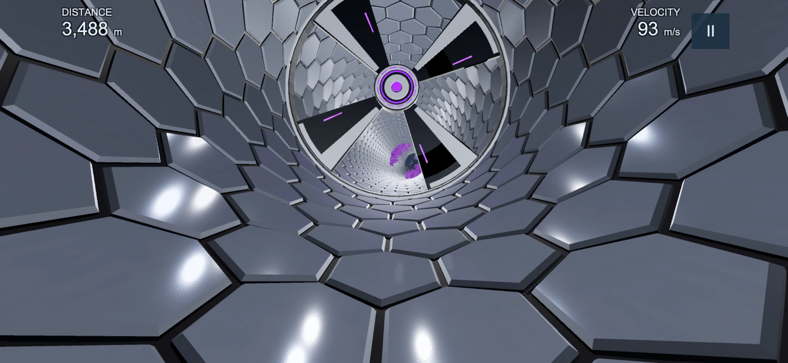
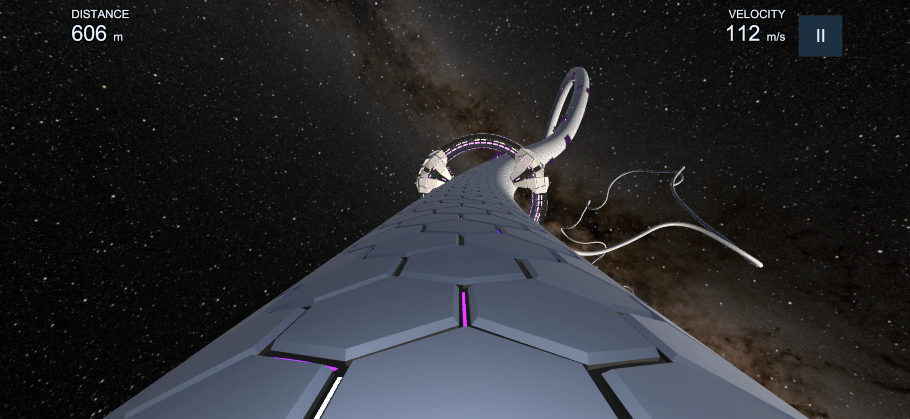
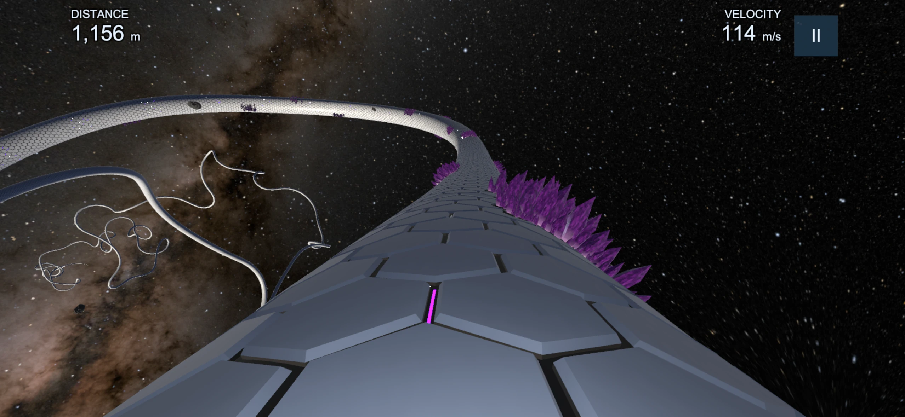

01 — INTERIOR
Inside the machine
Fly through a vast honeycomb tunnel. Four-blade fans, amethyst formations and changing light turn every opening into a decision.
WHITE / VIOLET / GRAPHITE
AN ORIGINAL IPHONE GAME/ 01
INFINITY ABYSS
Dodge obstacles and survive as long as you can. Every extra metre brings a new chance to beat your personal best in this Unity arcade game.
External testing on iPhone through Apple's TestFlight.

[ THE OBJECTIVE ]
Stay alive for as long as possible. Read the path, slip between hazards and push your personal best further into the abyss.
01 / MOTION
Real gameplay footage · Interior and Exterior · 29 seconds
02 / TWO WORLDS
The same white armor takes on a different meaning when the world turns inside out.
Fly through a vast honeycomb tunnel. Four-blade fans, amethyst formations and changing light turn every opening into a decision.
WHITE / VIOLET / GRAPHITE
Ride the outside of the armored route against a star-filled sky. Curves, orbital machinery and amethyst fields change how you read the path ahead.
ARMOR / SPACE / AMETHYST
03 / VISUAL ARCHIVE
Seven game views. Open any frame to see the whole image.
04 / THE PROJECT
WHITEFALL is an independent arcade flight game created by Andrei Bayarka under Hulio Studio. Its visual language pairs white and graphite honeycomb armor with violet machinery and amethyst hazards. The game is built in Unity for iPhone, with authored 3D assets and a procedurally extended route.
Free game. No ads or in-app purchases. Personal bests and optional Game Center leaderboards. iPhone release in preparation.